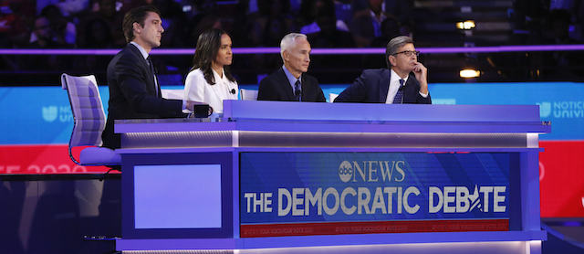

2019-09-15 08:00

ABC News and Univision hosted the Democratic debate at Texas Southern University in Houston on September 12th. Those putting questions to the candidates were ABC News anchor George Stephanopolous, World New Tonight anchor David Muir, Univision’s anchor Jorge Ramos, and news correspondent Linsey Davis, who asked the toughest and brightest questions.
The ten candidates chosen by the DNC were: poll leaders Bernie Sanders; Joe Biden; and Elizabeth Warren, all of whom are 70 and older and white; Amy Klobuchar; Kamala Harris; Cory Booker; and Beto O’Rourke, ranging in age from 47 to 59; then Julian Castro, Andrew Yang, and Pete Buttigieg, all of whom are 45 or younger.
A friend thought Castro’s going after Biden for “forgetting” what he had just said about his healthcare plan was a cheap shot — and I agreed. But it was a self-inflicted wound since Biden was caught either denying the truth or really had forgotten his own health plan’s buy-in requirements. They say that lying only makes it worse — and they’re right. Biden also proved himself incapable of apologizing for past mistakes.
Following the debate, the talking heads scored candidates as if it had been a boxing match: how many punches landed, how many punches suffered. The talking heads said that Castro had disqualified himself. Maybe, but the low punch he landed on Biden had been effective — and instructive. Voters now know that Biden can’t keep his composure debating the Liar-in-Chief.
Linsey Davis asked hard questions of Kamala Harris, and I’m not sure Harris stood up to the scrutiny of her own criminal justice record. Like Biden, she seemed incapable of apologizing for past mistakes. Buttigieg is eloquent but inexperienced. Much of the time he sounded like he was delivering an award-winning high schooler speech to the VFW. Bernie had lost his voice and never managed to explain his views to voters as well as Warren, and Booker neither gained nor lost traction but, for me, was unmemorable. Andrew Yang has always been the candidate to save Capitalism from the income inequality it produces — by giving people some crumbs to live on. That’s his whole shtick.
Beto O’Rourke is an earnest, decent guy with a mix of great and not-so-great positions. But his position on guns is what all Democrats should aim for — hell, yeah, we’re coming for your AR-15s. The talking heads said his quip was a gift to Republicans. Democrats practically wet themselves in shock. David Cicilline of Rhode Island, who sponsored an assault weapon ban himself, took pains to say that O’Rourke’s comment “doesn’t help.” Pete Buttigieg, who knows the damage the weapons can do, agreed that O’Rourke’s remark was just too much truth for voters to handle. Apparently, for mainstream Democrats, an assault weapon ban doesn’t really mean owners have to part with their weapons of war.
Finally, there was Amy Klobuchar, with her polite Midwestern version of “screw it, here’s what I think,” talking about legislation that could be voted upon today. While Klobuchar is a Centrist and hardly a visionary or a reformer, I can well imagine her at Donald Trump’s empty Oval Office desk, plugging away in an earnest bipartisan fashion at issues and political realities the country faces. If Democrats really need a Centrist to win, perhaps this is one that the progressive wing of the party may learn to grudgingly respect.